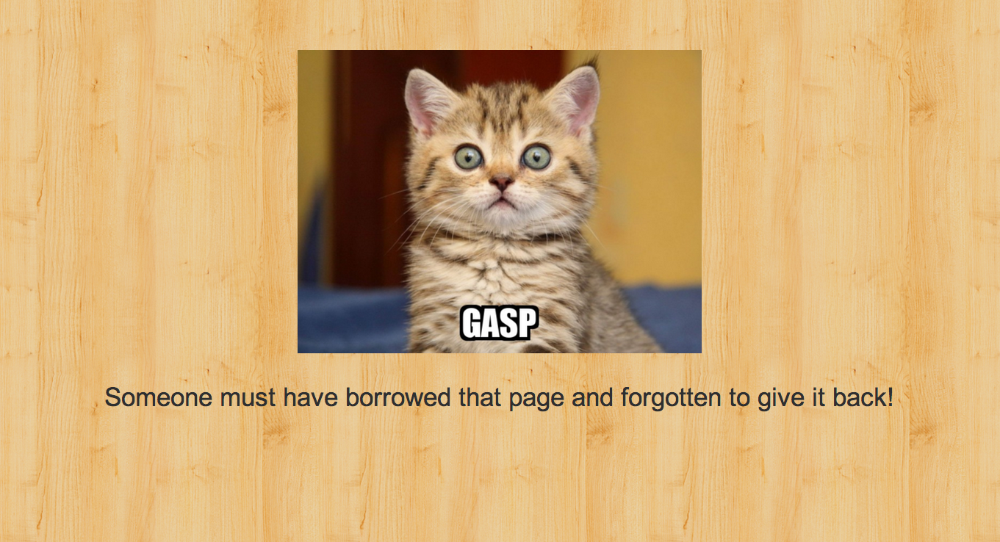

the SHED
A neighborhood tool sharing app.
Chris Henney
Elaine Looney
Jennifer Scales
we-share.herokuapp.com
Technologies in the Shed
Ruby on Rails
PostgreSQL
Amazon S3
Google Maps API
JavaScript
JQuery
Masonry, Owl-Carousel, imgLiquid
Backbone.js MVC / Underscore.js
RSpec Testing
How many developers does it take to change a lightbulb?
Chris Henney - @QualquerValor1
Elaine Looney - @loonelainey
Jennifer Scales - @jen_scales
we-share.herokuapp.com
404 Page
